L’Escalier des Sages Barent Coenders van Helpen
Livre I [préface - chapitre I]
en cours, le 1er mai 2002
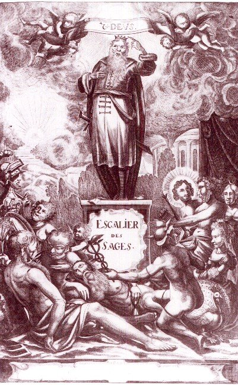
FIGURE I
(frontispice de l'Escalier des Sages)[images singulières et surréalistes que donne à voir la figure I, où l'on reconnaît Zeus trônant, qui montre ostensiblement sa couronne de majesté. On voit encore Saturne, agonisant ; Mercure, avec son casque et son caducée ; à gauche de Zeus, le Soleil ; à droite, des nuées sortant d'un temple où l'on peut voir l'athanor des Sages. Le visage d'un Christ, au-dessous, auréolé en gloire ; un paon, à droite de Mercure. Tout cela aggloméré en un désordre digne d'un Surréaliste, où domine la panthéisme ]
Amis Lecteur.
Puisqu’il semble que le Monde, à présent est charmé d’un si grand désir de posséder des trésors d’or et d’argent, et que les hommes n’emploient leurs esprits à rien, avec plus de zèle, qu’a tâcher d’acquérir des grands biens et des grandes richesses, afin de satisfaire, s’il est possible, à cette furieuse famine qu’ils ont après l’argent, et qu’il viennent pour cela faire peu de cas, et même à mépriser les plus grands biens, qui doivent véritablement être désirés ; à savoir la vraie sapience, qui consiste dans la connaissance de Dieu leur Créateur, et leur Premier Etre, et dans celle de ses créatures, laquelle, encore qu’elle soit plus haute et la plus nécessaire de toutes, ils la regardent de travers, comme superflue, et d’une façon tellement dédaigneuse, que, lorsqu’on vient à découvrir la vraie Philosophie, on ose bien effrontément répondre : Non est de pane lucrando, c’est à dire : ce n’est pas pour gagner du pain, ou pour faire profit1.
Ces sortes de gens ne pensent à rien qu’aux paroles très salutaires de Salustre :
Non oportet nos vitam silentio transire veluti pecora, sed studebimus memoriam nostram quam maxime longam essicere.
C’est-à-dire : Il ne faut pas que nous passions la vie sous silence, comme sont les bêtes, mais nous devons nous étudier, de faire en sorte que l’on se souvienne de nous aussi longtemps qu’il est possible2.
Ayant considéré mûrement cette inclinaison telle illicite et perverse, un désir m’a pris de tâcher de tendre l’arc de mon petit esprit, pour considérer s’il ne serait pas possible d’approcher à un but plus considérable et d’imprimer à mon prochain des pensées plus relevées en produisant une petite Philosophie, qui ne consistât pas en une grandissime quantité de beaux mots, ni en des disputes ergoteuses, mais qui ne fût au contraire que fondée simplement et succinctement au possible sur des démonstrations géométriques, et sur des expériences chimiques : Voici pourquoi j’ai cru que le titre de l’Escalier des Sages ne conviendrai pas mal à cette philosophie, et je ferais bien de la faire paraître en manière de Dialogue entre françois et vrederic, étant le premier celui qui tiendra son propos fondé principalement sur la Théorie, et l’autre sur la Pratique et sur des expériences.
J’ai jugé que ce susdit titre serait donné à bon droit à cette Philosophie, à cause que les Anciens Sages, comme le père de tous les Philosophes, Hermès Trimégiste, Moïse le Prophète, saint Thomas d’Aquin, Le Roi Geber, et une infinité d’autres vrais Philosophes ont fait leurs démarches sur cet escalier, et qu’ils ont obtenu du grand Dieu leurs sciences tant incomparables par l’ascension infatigable d’icelui3. Je tâcherai de suivre et de poursuivre fidèlement et autant qu’il me sera possible les pas de ces Sages, et diviserai pour cette fin ce Traité en Quatre Livres, qui livreront à peu près les dix degrés de l’ancienne sapience, et réduirai chaque degré en plusieurs paragraphes, vu que les susdits dix degrés auront leur source de ces quatre livres comme le nombre de dix a son origine et son accomplissement des quatre premiers nombres.
Car,
- Le premier livre livrera, Le premier être.
- Le second, Les deux contraires.
- Le troisième, Les quatre éléments.
- Et le quatrième, Les trois principes4.Les nombres desquels, étant aussi assemblés, font de même le nombre de dix, comme nous venons de dire des Quatre premiers nombres.
Ce sont, dis-je, ces dix degrés que les Ancien Sages ont montés, et étant parvenus sur la sommité d’iceux, ils ont vu par les jeux de leur entendement, que, comme on avance avec bon ordre depuis l’Unité jusqu’au nombre dix, comme tous les nombres sont compris sous ce nombre dix, et qu’il ne se peut faire aucun progrès à d’autres nombres outre le nombre dix, par aucune autre voie, qu’en retournant à l’unité. Qu’ainsi de même on monte par ordre de l’Unité de Dieu ou du Premier Etre de tous les êtres, aux Deux Contraires, aux Quatre Eléments, et aux Trois Principes, jusqu’au nombre Dix ; que toutes choses sont aussi comprises sous ce Nombre, et qu’il ne se peut non plus faire aucun progrès outre ce nombre Dix à aucun être que par le retour à l’Unité, qui est le Premier Etre de tous, et qu’ainsi la plus haute science, à savoir la connaissance parfaite du Créateur et de ses créatures est à espérer et à Comprendre par cette connaissance.
Je tâcherai ainsi de monter à ces Dix degrés de sapience le mieux que je pourrai et quand j’aurai le bonheur d’être parvenu jusqu’à la sommité de cet escalier ; d’étendre mes esprits et mes expériences sur les Trois Royaumes des Composés, qui sont, le Royaume des Végétaux, des Animaux et des Minéraux, comme du Centre jusqu’à la circonférence ; de considérer les dix degrés de sapience autant qu’il me sera possible en chaque Royaume à part, et de diriger à la fin mon pèlerinage en telle sorte que j’aurai quelque espoir de parvenir aussi au havre éternel de l’Unité de notre grand Dieu et Créateur.
Le Lecteur se contentera, s’il lui plaît, par provision, avec cette Première Partie de l’Escalier des Sages jusqu’au temps que notre grand Dieu me favorise de ses grâces pour produire et accomplir la Seconde Partie, qui est aussi Commencée. Je le supplie qu’en lisant ce Traité il ne s’attache trop à la lettre ni à l’écorce des choses que je représenterai, mais qu’il en veuille regarder la substance et la moelle d’un œil attentif, et qu’il jouisse ainsi du fruit de ce labeur qu’on lui présente d’un Cœur ouvert et sincère.
Adieu.
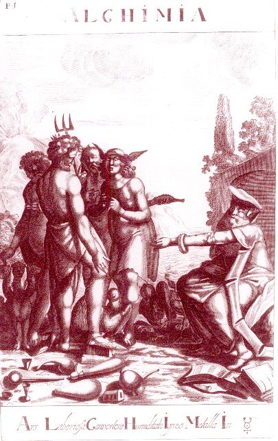
FIGURE II
(Ars Laboriosa Convertens Humiditate Ignea Metalla In)[figure plus classique, déjà analysée par E. Canseliet dans l'introduction de son recueil d'études alchimiques, in Alchimie, Pauvert - la planche présente au 1er plan des instruments de l'Art et à droite, ce qui n'est pas indiférent, du papier à musique et des paritions. A gauche, le chien Cerbère. De dos, Neptune et son trident. A sa droite, il doit s'agir d'Artémis.]
premier livre de la philosophie des anciens traitant de l’unité de dieu du premier être et de la première matière de la pierre des philosophes.
dialogue entre françois et vrederyk.
françois Commençant à monter le premier degré.De la connaissance du Créateur et des créatures. De l’Unité. De Dieu. Que les anciens Philosophes ont exprimés le Créateur et les créatures par des caractères. Comme aussi les lettres. Que toutes les lettres ont leur origine de l’O et de l’I démonstration Géométrique de cela5.
Mon très cher ami : je vous trouve bien pensif et dans une bien profonde méditation6 : Paix soit avec vous, et le créateur de toutes choses vous veuille rendre véritablement riche de paix (Vrederik c’est à dire en Flamand Riche de paix) selon votre nom de baptême qui vous est donné au nom de Dieu le Père, le Fils et le Saint Esprit.
vrederyk.
Mon plus cher ami : je vous remercie très affectueusement d’un abord tant aimable et vous souhaite réciproquement que vous soyez envoyé du grand dieu du Ciel et de la Terre à tous les humains pour tacher d’aider à les retirer du gouffre des ténèbres et d’ignorance, où la plupart, (hélas !) est plongé pour le présent et pour les transplanter à une étendue infinie de clarté et de connaissance : c’est sur ce sujet que j’ai fixé mes pensées, et que j’adresse mes soupirs, car je vois, de plus en plus clairement, que le monde d’à présent devient tellement obscur, et ignorant à la connaissance de Dieu et de sa Nature, qu’il se trouve un nombre infini de personnes lesquelles (encore qu’ils soient savants à parler curieusement plusieurs langues et qui passent pour ça pour de grands savants) sont pourtant peu savants à la connaissance de leur Dieu, et de la nature de leur Créateur ; Des Deux Qualités Contraires ; Des Trois Principes ; et des Quatre Eléments : desquels, es quels, avec lesquels, et par lesquels toutes choses sont faites, soutenues, gouvernées, et auxquelles elles sont réduites : et (ce qui est grandement à plaindre) qui ne s’étudient à rien plus qu’à amasser de l’argent et des biens à droit ou à tort, ou par quelque voie que ce soit, afin de se rendre grand et bien venus par-là auprès des impies et auprès des ignorants es sciences Divines et Naturelles, ne songeant à rien moins, qu’à la connaissance du Créateur et des Etres créés, qui est la science la plus relevée de toutes les sciences, et par laquelle la félicité éternelle est à espérer et à acquérir : selon les propres paroles de Jésus Christ St. Jean c. 17. v.3. :
Cette est la vie éternelle, qu’ils te connaissent seul vrai Dieu, et Jésus Christ que tu as envoyé.
Et selon la maxime très véritable des Doctes confirmant les divines paroles de notre Sauveur, par ce sens,
Scientia virtutis cultum praecedit, nemo exim fideltrer apperre potest quod ignorat.
françois.
Je vous suis obligé d’un souhait tant gracieux que vous avez la bonté de me refaire, et m’estime heureux de vous rencontrer ici, afin d’avoir occasion de tenir avec vous un propos sérieux et fondamental sur cette matière qu’il vous à plu d’entamer de la plus haute science de Dieu le tout puissant, et de sa Nature. Je vous promets que ce sera avec une probité et une sincérité très grande que je vous entendrai.
vrederyk.
Je m’estime aussi bien heureux de l’honneur du rencontre, que le bon dieu m’a fait naître d’avoir avec vous ; et puisque j’aperçois que, nous sommes à peu près, d’un même génie, d’une même inclinaison, d’une même étude, et d’un même calibre, je tiendrai fort volontiers un discours avec vous qui soit bien fondé, et même sur des démonstrations et sur des expériences Mathématiques et Chimiques.
françois.
Le grand Dieu de paix soit avec nous par son Saint Esprit ! et nous veuille envoyer des telles influences dans nos esprits que, nous puissions heureusement parfaire notre dessein, puisque nous sommes bien intentionnés de le produire en lumière à sa plus grande gloire, pour le service du Christianisme et pour le salut éternel de nos âmes.
vrederyk.
Je joins mon souhait au votre et ce d’un zèle autant ardent qu’il peut être exprimé.
françois.
Je prendrai donc, si vous plaît le commencement de notre discours sur moi ; mais pour tâcher de savoir si le grand dieu a également illuminé nos esprits de la lumière de sa grâce, tellement que nous soyons en tout environ d’un même sentiment, je prendrai la liberté de vous demander tout premier, qu’elle est votre opinion de l’origine des Etres ?
vrederyk.
Vous commencez sagement votre discours, puisqu’il n’y a rien qui n’ait un commencement, et tout ce qui est, qu’il faut nécessairement qu’il ait une origine.
Pour vous répondre donc quel puisse être mon opinion de l’origine de tous les Etres : je vous dirai là dessus, que le commencement ou l’origine de tous les Etres est un Etre Unique ; et comme tous les nombres prennent leurs origines de l’Unité, qu’ainsi tous les Etres prennent leurs commencements d’un seul Etre, aussi bien les Supercélestes que les Célestes, tant les Supernaturels que les Naturels ou Elémentaires, ou de quel nom qu’on les puisse nommer.
françois.
Je suis bien du même sentiment avec vous, mais comment est appelé un tel Etre Unique duquel toutes choses ont leurs origines ?
vrederyk.
Un tel Etre Unique est appelé dieu et n’est pas autre que dieu.
françois.
Qu’est ce donc dieu, et comment en ferez vous la définition selon votre connaissance ?
vrederyk.
Vous me demandez une chose difficile, car de faire la Définition d’un Etre qui est infini et qui est Tout, cela n’est pas bien possible de faire pour qui que ce soit : je vous en exprimerai pourtant mon sentiment selon la petite proportion de mon chétif esprit, qui est tel :
Dieu est une Unité infinie, et un Etre éternel incréé de tous les Etres : une source de tout bien et de toute puissance, qui a pour sa demeure toutes les choses Supercélestes, Supernaturelles7, Célestes, et Naturelle, et particulièrement une Lumière inaccessible et très grande : duquel, en quel, par lequel et auquel toutes les choses ont été et seront en toute éternité. En un mot :
dieu est tout en tout.
françois.
Vous dites fort bien, que dieu est une Unité Infinie, et un Etre éternel incréé et infini de tous les Etres, et un principe de toute puissance : vu que les plus Anciens des Philosophes, à savoir les Hébreux, ont exprimé le mot dieu par une seule lettre jod8, qui est à dire : Une divine Essence, et une fontaine de toute vertu et de toute puissance : et qu’ils n’ont exprimé aucun autre mot par l’Unité (à mon savoir) que celui-ci, et sans doute l’ont-ils fait à cette intention, qu’ils ont voulu exprimer par un tel caractère, que, comme il n’est pas possible de tirer aucune ligne qu’elle ne prenne son origine d’un point, qu’ainsi de même, il est impossible qu’aucune créature puisse prendre l’origine de son être que de l’Unité de son Créateur.
vrederyk.
Vous n’avez pas mal approfondi cette affaire : j’ai eu aussi autrefois des spéculations sur des choses pareilles à celle-là ; il me semble que les Anciens ont aussi exprimé la Divinité par une simple Figure ronde, qui est un Cercle, pour Signifier par-là, que la Divinité est sans commencement et sans fin, comme un cercle n’a ni commencement ni fin, et que la Divinité est l’unique Etre parfait, comme le cercle est l’unique Figure la plus parfaite de toutes les Figures Géométriques9.
françois.
Je crois que c’est ainsi comme vous dites : et je ne doute pas qu’ils ne l’aient fait à cette intention, et qu’ils n’ont pas exprimé le créateur tout seul par un Caractère, mais qu’ils ont fait de même de la plus grande parties des créatures, et qu’ils ont proportionné les caractères à proportion de la perfection des créatures.
vrederyk.
Assurément : et qui plus est, qu’ils ont même formé les lettres à cette intention, et qu’ils les ont composées des lignes droites et courbées, afin que par composition et par conjonction d’icelles ils pussent former des mots, pour pouvoir exprimer des mystères par-là, et les rendre ainsi manifestes à ceux qui font des recherches infatigables des merveilles de Dieu et de sa Nature.
Mon très cher ami, puisque nous sommes sur le propos des Caractères, et des lettres, je ne puis pas bien m’empêcher de vous faire un petit récit d’une spéculation que j’ai eue, il y a quelques temps, lorsque étant dans ma solitude, j’avais dirigé mes méditations sur l’histoire Divine et Supernaturelle de notre Sauveur Jésus Christ, depuis sa conception jusqu’à son ascension glorieuse, et ce qui m’est tombé dans l’esprit après avoir fait une délinéation curieuse de ces trois mots :
deus maria jesus.
Mais puisque les vrais Caractères et Figures des lettres Latines sont devenues fort barbares, et que la vraie proportion d’icelles n’est pas connue à tout le monde, et afin qu’un chacun puisse lui-même prendre et faire le mesurage à la règle et au compas de ce que nous allons proférer, je n’ai pas jugé mal à propos de faire ici la description fondamentale des lettres susdites auparavant avec leur juste proportion, vous suppliant, qu’encore que ce discours nous fera promener un peu depuis le centre jusqu’à la circonférence, que vous ayez autant de patience que je les couche de bon ordre pour servir d’instruction pour les ignorants, et pour un alphabet de notre Philosophie.
françois.
Très volontiers : j’ai désir de vous entendre, et d’avoir aussi occasion par après de produire quelque chose de même.
vrederyk.
Prenez donc garde si vous plaît, afin que vous puissiez comprendre la démonstration que je m’en vais vous en faire au compas et à la règle.
Nous avons dit ci-devant, que les lettres Latines sont composées de lignes droites et courbées régulières, mais nous n’avons pas spécifié lesquelles, ni combien de ces dites lettres sont faites d’une seule ligne droite, ou d’une seule ligne courbée, ni combien il y en a qui sont composées des lignes droites et courbées tout ensemble ; ni les spéculations qu’il y a à prendre, comme je vous démontrerai ensuite.
Sachez, si vous plaît, que les Latins ont donné la plus grande vertu, et attribué la plus grande puissance à leurs lettres voyelles, et que les consonantes ne sont proprement que des lettres assistantes et muettes, et lesquelles ne peuvent être prononcées sans l’assistance des voyelles, car vous savez que le mot vocalis a sa dérivation du mot vox, qui est à dire voix, et qu’aussi le mot consonant est composé de la proposition cum et du verbe sono, qui est à dire en Français, je sonne avec.
Or ces dites voyelles étant cinq en nombre, une d’icelles est un Cercle parfait à savoir l’O.
Une est faite d’une ligne droite comme la voyelle I.
Une de deux lignes droites comme sont les voyelles A et E.
Il est à remarquer que la voyelle O pourrait être prise, avec assez bon fondement, pour une devise, marque ou Signature du Premier Etre, pour les raisons susdites.
La voyelle V (U) pour une marque ou Signature des deux qualités contraires, à cause du nombre de deux qu’on voit en icelle.
La voyelle A pour une devise des Trois Principes à cause des trois lignes qu’elle contient, qui constituent un triangle équilatéral.
Et les lettres E et I, pour une signature des Quatre Eléments, vu que leur lignes jointes régulièrement font paraître un quadrangle équilatéral.
Il est aussi à noter que le nombre de toutes ces lignes droites de ces voyelles susdites font le juste nombre de dix, duquel nombre les Anciens ont fait grand cas, et beaucoup d’état comme vous savez10.
françois.
Vous faites fort bien de traiter si méthodiquement, et que vous commencez notre Traité de Philosophie de l’origine des Lettres même, afin que nous agissions ainsi fondamentalement des grandes merveilles de Dieu, et que nous tâchions de donner une telle instruction avec le compas et la règle aux ignorants tout de même comme si votre intention était d’apprendre les enfants à écrire.
vrederyk.
Il est nécessaire de l’entreprendre de cette façon là, vu que la vraie Philosophie est bien fort simple, mais qu’on la couvre et l’obscurcit tellement pour le présent, qu’elle n’est presque plus à connaître.
françois.
Vous dites la vérité, car la grandissime quantité de définitions, de division, d’argumentation et tant d’autres altercations obstinées causent une si grande confusion, et font tellement éloigner des choses divines, qui sont si proches et comme dans le centre, à une étendue ou circonférence si grande, qu’ils font paraître par leurs distinctions subtiles par la délicatesse de leurs langages, que les choses, qui sont véritablement très faciles à comprendre, et si claires à apercevoir, comme la clarté de la lumière du soleil même, paraissent si obscures et tellement éloignées de la vérité, que tout est presque couvert d’obscurité et de ténèbres : Et (ce qui est fort à plaindre) c’est que la plupart des savants d’à présent se font à croire, qu’ils ne peuvent faire voir la subtilité de leurs esprits, ni de leur sagesse en rien plus, qu’à la subtilité des disputes et à rendre toutes choses confuses.
vrederyk.
C’est ainsi comme vous dites fort bien : mais pour retourner à notre propos, et pour tâcher de faire éloigner les ténèbres de ce centre lumineux autant qu’il nous sera possible, et ce par le moyen de la petite étincelle que le bon Dieu a allumé en moi par sa grâce infinie, et pour montrer qu’une créature raisonnable est obligée d’imiter et d’obéir à la volonté et aux commandements de son Créateur, qui a aussi chassé les ténèbres arrière de sa lumière à la circonférence, lorsqu’il à fait la création générale de tout l’Univers, je tâcherai de poursuivre ma petite entreprise touchant la démonstration Mathématique des lettres et particulièrement celle des cinq voyelles.
Prenez un Compas, posez l’un de ses pieds sur le Papier, étendez l’autre pied d’une telle distance que bon il vous semble et décrivez un cercle, ainsi aurez vous la voyelle O dont vous pourrez voir la Figure Num. I.
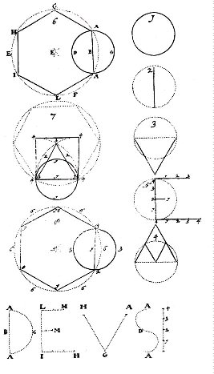
FIGURE III
(Figure num. 1, 2, 3, 4, 5, 6, 7, 8 - cliquez pour agrandir)Coupez cette lettre O ( de laquelle vous verrez, que toutes les autres lettres prennent leur origine) par le milieu en deux parties égales, appliquant la règle depuis la circonférence au travers du centre, et vous tirerez le Diamètre qui est votre voyelle I. Voyez la Figure Num. 2.
Prenez ce Diamètre de la voyelle O qui est ladite I tirez-là horizontalement, et formez un triangle par-dessous selon l’art, dont vous laisserez la ligne horizontale imaginaire et les deux autres vous les écrirez avec de l’encre, et ainsi trouverez vous votre voyelle V (U). Voyez en la Figure Num. 3.
La lettre A sera formée de cette manière : faites ledit triangle contraire à celui de l’V, divisez les deux lignes en deux parties égales et figurez un triangle par-dessous, dont la pointe finira au centre de la voyelle O susdite, ainsi aurez vous la voyelle A. Voyez la Figure Num. 4.
La lettre E soit façonnée de cette sorte : tirez le diamètre de la lettre O perpendiculairement, divisez ce diamètre en quatre parties égales, posez-le tout entier horizontalement à la droite du bas de la perpendiculaire ; trois parties d’icelle de même au haut d’icelle, et une partie du centre de la même perpendiculaire ou diamètre, et ainsi formerez-vous parfaitement la lettre, ou la voyelle E. Voyez la Figure Num. 5.
Ainsi trouverez vous la description des cinq voyelles fondamentales faites selon les règles de la géométrie.
Touchant les autres lettres Latines elles sont formées toutes au compas et à la règle de la même manière, et elles ont aussi comme les voyelles, leur origine de la lettre O, et de son diamètre, qui est la I, desquelles un chacun pourra faire la délinéation et description sur les mêmes fondements, que nous avons fait des cinq voyelles, jugeant le temps trop précieux de les coucher toutes ici.
françois.
Il n’est pas besoin non plus de nous arrêter plus longtemps à la figuration des lettres, je vous prie de poursuivre à me révéler les mystères que vous m’avez promis de me faire connaître et comprendre des lettres de ces trois mots ou noms.
deus maria jesus.
Je suis (comme vous savez) un amateur de toutes sortes de belles sciences et de curiosités louables, c’est pourquoi que j’aspire d’entendre ce que vous pouvez proférer.
J’ai bien lu les Livres des Anciens Cabalistes, et j’ai vu entre autre des caractères fort étranges et en grande quantité dans les livres de Cornélius Agrippa11, par lesquels il a produit des effets prodigieux et inouïs, à ce qu’il dit, et qui sont pour moi (je confesse ma faiblesse) quasi incroyable, mais je n’ai jamais entendu ni lu, qu’il y a quelque vertu cachée dans la signature des lettres, laquelle je désire fort d’entendre de vos grâces.
vrederyk.
Si vous croyez que je vous produirai des caractères et des grimaces comme Cornélius Agrippa a fait, vous vous trouverez bien trompé, vu que mon intention n’est nullement de mettre en lumière des choses si subtiles et si artificielles qu’il a fait, mon esprit n’est pas assez subtil et mon cerveau trop phlegmatique pour en concevoir des telles, et encore moins capable pour les faire comprendre et croire aux autres, ce pourquoi je les laisse en leur être pour ceux qui sont doués d’un esprit plus astral que le mien, et qui ont la foi plus grande que moi ; ce n’est pas non plus mon intention de vouloir attribuer quelque vertu aux lettres ou aux caractères, et de faire à croire que l’une doive être plus et l’autre moins estimée à cause de la différence de leurs lignes : mais ma simple intention n’est autre que de tâcher de faire voir à mon prochain, qu’étant dans une profonde méditation de notre grand Dieu, de la très Sainte Trinité, et de l’histoire supernaturelle e la conception, de la passion, de la mort, résurrection et de l’ascension de notre sauveur Jésus Christ, j’ai écrit géométriquement les trois noms susdits, et qu’ayant très curieusement examiné la signature de leur lettres, j’ai découvert (moyennant les influences divines) les choses et les mystères suivants.
Au nom de dieu, nous commencerons par la signature des lettres qui composent le nom de dieu : en Latin deus.
deus en langue Grecque est autant à dire que, voyant tout, à savoir deos12:
J’espère que le dieu tout voyant nous fera la grâce d’illuminer tellement les jeux de notre entendement et de notre corps que nous passerons pas un atome (pour parler ainsi) qui soit compris es lettres de son très saint Nom, sans que nous ne voyons tout et que n’en fassions des démonstrations et des interprétations tendant à l’augmentation de sa plus grande gloire et au profit de notre prochain.
Le mot deus comprend donc en soi un cercle et six diamètres du même cercle, comme je vous ferais voir ici ensuite.
La ligne droite de la première lettre du mot deus est le diamètre aa. lequel étant divisé en deux parties égales, en b, et la demi-circonférence étant tirée depuis l’un bout d’icelle jusqu’à l’autre, la lette d sera formée ; à laquelle demi-circonférence aa., la dernière lettre du même mot, à savoir la lettre s, étant appliquée par les deux bouts, vous trouverez la construction d’un cercle parfait coupé par son Diamètre ac, ad.
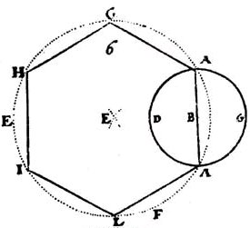
FIGURE IV
(fig. Num. 6, détail du haut, à gauche, de la figure III)Vous ferez sur ce diamètre, de sa longueur, une intersection e de laquelle vous tirerez un cercle fff. par les deux bouts du diamètre aa, et mettrez sur icelui l’une des lignes de la même lettre marquée ag. depuis a en g. et l’autre ligne de la même lettre marquée agh. depuis la lettre g en h. La quatrième ligne à savoir la basse ligne horizontale de la lettre e marquée hi, depuis h en i. La cinquième ligne marquée il, qui est la perpendiculaire de la même lettre, depuis i en l. Et la sixième ligne qui est composée des deux autres lignes de la même lettre marquée lmm. Depuis l in a. Et ainsi recevez-vous, par une seule extension de votre compas, un hexagone parfait comprenant très parfaitement et très régulièrement toutes les lignes des lettres du mot de notre grand dieu, sans les augmenter ou diminuer d’un seul point. Voyez en la Figure Num. 6.
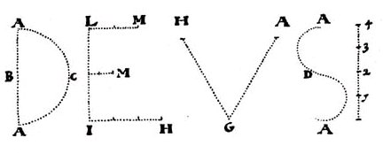
FIGURE V
(détail du bas de la figure III)Vous pouvez remarquer aux lignes de ce mot, deus que le centre, qui est son commencement, dénote et enseigne l’Unité de laquelle tous les Etres du Monde ont eu leur source, et proviennent incessamment, et à laquelle ils doivent aussi retourner : car lorsque vous posez un point sur le papier, et que regardez alors s’il y a moyen de tirer par aucune autre voie quelque ligne, de quelle nature qu’elle soit, devant que vous ayez mis le point, vous le jugerez assurément impossible, et comme il faut très nécessairement, que toutes les lignes aient leur commencement d’un point ; ainsi faut-il que tous les Etres et tous les Nombres aient leurs principes de l’Unité.
Mais afin que vous sachiez ce que c’est qu’un Nombre, vous observerez, s'il vous plaît, qu’un nombre n’est autre chose qu’une répétition de l’Unité, c’est de quoi nous prendrons occasion d’en parler ailleurs plus amplement.
Il est donc assez évident que le point ou le centre, et la circonférence ou le cercle, qui se trouvent à la description des lettres susdites, enseignant assez clairement, qu’il y a un commencement et une fin de toutes choses, car il n’y a rien eu plutôt qu’un et il n’y aura rien plus tard qu’un.
Il y a un commencement de toutes choses et toute chose retourne à l’Unité, il n’y a rien outre cette Unité, et toutes les choses qui sont, désirent la même Unité, à cause que le tout à pris son origine de l’Unité : Et pour afin que toutes choses deviennent une seule chose, il est très nécessaire que le tout soit participant et partageant de cet un ; car comme tous les Etres sont inclinés de retourner à cette Un Etre, duquel ils sont sortis, et il est besoin que toutes choses se privent de la multitude.
C’est pourquoi que nous attribuons ici l’unité circulaire à dieu, lequel, étant lui-même unique et sans nombre, a pourtant fait et créé de lui des Etres innombrables, et les crée et les comprend en lui comme toutes les lignes, lettres, nombres, caractères et figures on leur principe et leur source d’un féal point, qui est sans nombre, comme nous avons dit ci-devant.
Voyons à cette heure ce que les lignes droites du susdit mot deus nous découvrent :
Il me semble que la lettre v ne fera pas mal entrer nous pensées à la création des Etres, vu que la v est composée de deux Diamètres, et que le nombre de deux est appelé des Anciens le germe de l’Unité, et la Procréation la première : comme aussi, que le grand Dieu, étant comme sorti hors de son Unité, a créé et crée encore tous les jours toutes les créatures, par le moyen de ses deux qualités contraires qui sont le Sec et l’Humide, desquelles nous discourrerons, Dieu aidant, plus amplement, lorsque nous tiendrons propos de la création des Végétaux, des animaux et des minéraux.
Lorsqu’on applique les deux bouts de la lettre v susdite aux deux bouts du diamètre ci-dessus exprimé, on verra la figure d’un triangle équilatéral qui ne représente pas mal un caractère de la Trinité et le nombre Trois, principe dans tous les mixtes.
Et pour découvrir sur ce même fondement un caractère des Quatre Eléments ; on pourra commodément appliquer les lignes de la lettre E sur le même diamètre du susdit cercle, et ainsi se présentera aussi un quadrangle parfait, qui exprime le nombre des Quatre Eléments, et de cette manière sera le :
- Premier être représenté par le Centre et la Circonférence, marqués du Nombre 1.1.1.
- Les deux qualités contraires par la lettre v marquées 2.2
- Les trois principes par le triangle équilatre marqué de 3.3.3.
- Et les quatre éléments par le quadrangle marqué de 4.4.4.4. Voyez en la Figure Num.7.13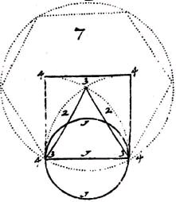
FIGURE VI
(fig. Num. 7, détail du milieu à gauche de la figure III)Le nombre des lettres du mot deus donne aussi à connaître le nombres des Eléments ; et que plus est chacun de ces quatre lettres ne pourrait pas mal exprimer un caractère d’un Elément à part, de cette sorte :
La lettre s étant fléchie et formée de la façon que les deux bouts viennent à toucher l’un l’autre, représentant une rondeur parfaite, laquelle n’enseignera pas mal un caractère de l’Elément du feu : car comme le centre d’un cercle étend tous ses rayons alentour de soi à la circonférence : tout de même fait le soleil, lequel, étant sphérique, le cœur et le centre de tout le monde, et la cause de tout le feu dans icelui, jette les rayons de sa lumière alentour de lui à la circonférence, et donne à tous les être composés des vicaires, qui sont proprement les vies dedans les corps, lieux de leurs résidences, desquelles étendent de même les rayons de leur feu dedans leur Microcosme depuis le centre jusqu’à la circonférence, comme le Soleil leur père les darde à la circonférence de son Macrocosme.
françois.
Je vous entends fort volontiers : mais je vous prie de me faire le plaisir de me donner un peu d’éclaircissement touchant le centre et la circonférence du Macrocosme et du Microcosme, devant que vous avanciez davantage votre discours, car vous savez qu’il y a des opinions bien différentes touchant cette matière entre les Philosophes ; dites-en moi votre sentiment si vous plaît, et puis je vous en dirai le mien.
vrederyk.
Il est vrai que cela se pourrait fort bien faire par cette occasion, mais puisque notre entretien n’est ici que des lignes, caractères et des lettres, vous m’obligerez de me permettre d’achever ce que j’ai commencé, et de différer ce que vous me demandez, jusqu’à ce que nous entamions le discours de l’écriture de Dieu même, qui sont les créatures.
françois.
Si vous le jugez ainsi, vous pourrez poursuivre.
vrederyk.
La lettre d (à ce qu’il me semble) ne nous enseigne pas mal un caractère de l’Elément de l’Air, à cause que cette lettre est composée d’un diamètre et d’un demi cercle : car comme la rondeur de cette lettre enseigne la perfection, la spiritualité et l’activité du Feu, et la ligne droite, l’imperfection, la corporalité et la matière souffrante et concevante : ainsi est aussi l’Air un Elément lequel est principalement composé d’une Eau étendue à la circonférence et imprégnée du Feu.
Il me semble que l’Elément de l’Eau, ne serait pas mal exprimé par le caractère de la lettre v, à cause qu’elle est composée d’une telle façon, qu’elle contient deux diamètres, lesquels s’unissent en bas en forme d’un coin, dont les deux pointes montant en haut démontrent les deux Eléments supérieurs, comme la pointe d’en bas enseigne l’Elément le plus bas, à savoir la Terre, desquels elle est composée : et que plus est, la courbure de cette lettre donne à connaître la propriété de la flexibilité et de la fluxibilité de l’Eau : et la forme angulaire d’icelle donne à savoir que l’Eau conjointe avec les deux Eléments supérieurs est un Agent sur et dedans la Terre, comme un coin est un instrument propre pour fendre quelque matière dure, soit bois, soient pierres ou autres.
La Signature de la lettre e ne se fait pas tant mal aller nos pensées à l’Elément de la Terre, car, comme trois lignes de trois longueurs différentes se présentent sur la perpendiculaire d’icelle, que les trois Eléments supérieurs sont aussi de trois qualités différentes, puisqu’ils sont de trois distances différentes, et qu’il faut qu’ils fassent leurs opérations et imprégnations dans la Terre par trois degrés différents, comme nous dirons plus amplement en son lieu.
Voyez comment les lignes des lettres du mot deus donnent à connaître plusieurs choses bien remarquables, et qu’elles donnent encore à remarquer, qu’il y a une rotation ou conversion perpétuelle, aussi bien des Eléments, que de tous les composés de la Nature, ainsi que la Figure Num.8. représente le nombre parfait de Dix, vous enseignera très clairement, et dont la description Géométrique est telle : Posez un Point sur le papier et le notez Nombre 1.
Mettez l’un des pieds de votre compas sur ce point, étendez son autre pied d’une telle distance que vous voulez, et marquez le point de votre distance Nombre 2.
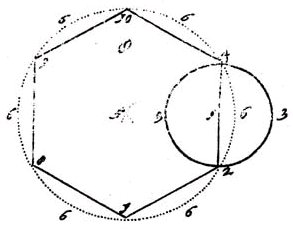
FIGURE VII
(fig. Num 8, extrait de la figure III : le nombre X)Faites de cette même étendue du Compas un Cercle et le signez des Nombres 3.3.
Tirez le diamètre de ce cercle depuis Num.2. au travers du centre jusqu’à la rencontre de la circonférence, et en notez le dernier bout du Nombre 4.
Faites sur ce diamètre, de la longueur d’icelui, une croisée et marquez le milieu d’icelle du Nombre 5.
Laissant l’étendue de votre compas de la même distance vous décrivez du Nombre 5 une circonférence par les deux bouts du diamètre du premier cercle 2. et 4. et la marquez du Nombre 6.6.6.6.6.6.
Mettez l’un des pieds du compas, toujours de la même distance du diamètre du premier, ou du demi diamètre du second cercle, sur Nombre 2. et mettez l’autre pied d’icelui sur la circonférence, et marquez le premier point du Nombre 7. Le second du Nombre 8. Le troisième du Nombre 9, et le quatrième du Nombre 10. Ainsi avez vous une démonstration très nette du Nombre parfait de dix, lequel est procuré des lignes du mot deus, par dix opérations différentes du compas et de la règle. Voyez en la Figure Num. 8.
Voyez ici comment tous les nombres, toutes les lignes, tous les caractères et toutes les figures ont leurs origines de l’Unité : Car d’un proviennent deux, puisque deux fois un font deux. L’unité fait le centre et le nombre de deux fait le rayon.
De un et de deux proviennent trois, vu que un et deux font trois.
Comme le nombre deux, à savoir le rayon, forte de l’Unité ou du Centre : et comme le nombre trois provient de l’Unité et du nombre deux, ainsi provient la circonférence du centre et du rayon ; auquel nombre trois l’Unité étant ajoutée, à savoir le rayon prolongé depuis le centre jusqu’à la circonférence, vous trouverez le Nombre de quatre, puisque trois et un font quatre, tout ainsi que le centre, le rayon, la circonférence et le diamètre font quatre en nombre, tout de même comme un, un et deux par la règle de l’addition font quatre.
Et comme les Quatre premiers nombres de l’Arithmétique, 1, 2, 3, et 4, étant aussi perpendiculairement mis les uns sur les autres, selon la règle de l’arithmétique susdite, parfont le Nombre parfait de dix.
Ainsi proviennent aussi, et sont formé toutes sortes de lignes et figures d’un centre, d’un rayon, d’une circonférence, et d’un diamètre, et très particulièrement la figure hexangulaire régulière, laquelle prend son commencement de l’unité, et monte jusqu’au nombre parfait de dix (comme nous avons dit ci-devant) ou elle cesse, puisqu’alors la perfection de sa Figure est accomplie, et qu’elle est en état de multiplier sa figure en infini.
Tout de même comme à ce nombre de neuf, l’Unité étant ajoutée le parfait nombre de dix se trouve : laquelle unité est alors un commencement de la multiplication des nombres premiers jusqu’à une étendue quasi infinie et inexprimable, car outre le nombre de neuf il n’y a plus de nombre simple.
C’est de cette manière qu’on va naturellement et démonstrativement de l’Unité à un Nombre innombrable, du centre à la circonférence, et c’est de cette manière que le créateur s’étend infiniment dans ses créatures, et que les créatures retournent à leur Premier Etre, duquel toutes choses sont sorties : comme un certain Philosophe en parle aussi très sagement et très fondamentalement, en disant :
Omnis Naturae consistens linitibus operatio mirandorum ex unitate per binarum in ternarium descendit, non prius tamen quam à quaternario per ordinem graduum in simplicitate consurgat.
Nam cum quator numerare velis, non aliter quam ab unitate scis inchoandum, ut cum dicis : Unum, Duo, Tria, Quator, quae simul sumpa, facinut Decem.
Hoec omnis numeri perfecta consummatio est, qui tunc sit regressus ad unum, et ultra denarium non est numerus simples.
Quicunque hujus purae simplicitatis simplici notitia sublimatus est, in omni scientia consummatus erit, perficiet que opera mirande, et stupendos inveniet effectus.C’est à dire :
Toute l’opération des merveilles de la Nature, qui consiste en des limites ou bornes, descend hors de l’Unité par le nombre de Deux au nombre Trois, non plutôt pourtant, qu’elle ne monte du nombre de Quatre par un ordre de degrés en Simplicité : car vous savez que lorsque vous voulez compter Quatre, qu’il faut commencer que de l’Unité, comme quand on dit. Un , Deux, Trois, Quatre, lesquels étant pris ensemble, font dix.
Celle-ci est la parfaite consommation de tout nombre, à cause qu’il se fait alors une régression à l’Unité : et qu’il n’y a pas de nombre simple autre le nombre Dix.
Celle-ci est la parfaite consommation de tout nombre, à cause qu’il se fait alors une régression à l’Unité : et qu’il n’y a pas de nombre simple outre le nombre Dix.
Tout icelui qui est sublimé à la connaissance simple de cette simplicité pure, il sera parfaitement consommé en toutes sortes de sciences, il fera des œuvres dignes d’admiration, et trouvera des effets prodigieux.C’est d’une telle manière qu’il faut entendre que le Monde est créé de rien, et qu’il retournera à rien, quand ce sera ainsi le bon plaisir de l’Unité éternelle et incréée.
Outre les choses susdites vous pourrez regarder les figures qui suivent ici, qui serviront pour confirmer notre discours.
Voyez, mon cher, combien les lettres du mot deus nous font comprendre clairement : le premier être ; Les quatre éléments : et les trois principes : et de quelle façon il faut entendre que tous les Etres sont sortis d’un seul être.
Outre ce que je viens à vous dire, il me semble que je vous pourrais encore faire comprendre la création des composés, et de quelle façon le créateur s’est étendu dedans les créatures, d’une autre manière ; et ce par les lignes des lettres du mot jesus.
Lorsque vous conférez ensemble les lignes du mot jesus avec celle des lettres du mot deus vous pouvez apercevoir parfaitement, de quelle façon la seconde Personne de la Divinité est sortie de la Première, et comment il est à comprendre qu’elle est réunie à la Première :
Considérant curieusement les lignes des lettres du mot jesus, vous trouverez effectivement, qu’elles ont les mêmes que le mot deus contient, et qu’il n’y a que cette différence ; que celui-ci n’a que quatre, et celui-là cinq lettres, de telle sorte que la première et la troisième lettre du mot jesus sont faites de la première lettre du mot deus.
La lettre s, qui contient le milieu du mot jesus (faisant ici l’augmentation et le changement du mot deus) pourrait être prise ici pour un caractère de la Quintessence : car comme les deux bouts de la lettre s, étant joints ensemble, font une figure ronde au milieu du mot jesus, et comme elle a son origine de la première lettre du mot deus, ainsi le fils de Dieu est aussi la Rondeur parfaite, ou la quintessence sortie des flancs de dieu le père.
Comme les lettres du mot jesus redeviennent un même mot avec le mot deus, lorsque le lettre s est réunie à la lettre i, qui refont un d, ainsi est le Fils de Dieu un même Dieu, mais la deuxième personne procréée de Dieu le père. Comme il est écrit :
Celui-ci est mon fils bien aimé, que j’ai engendré aujourd’hui.
Je tâcherai de vous démontrer, avec la règle et le compas, de quelle façon cette génération s’est pu faire, et ce, en faisant une description parfaite de ces deux mots susdits.
Prenez pour cette fin une plume, de l’encre, un compas, une règle et du papier, écrivez, selon la susdite proportion des lettres, le mot deus, et formez des lignes de ces lettres un hexagone régulier, de cette manière :
Figure V bis
(rappel du mot deus)Tirez la ligne ab de la même longueur qu’est celle de la lettre d, ou de la lettre i du mot susdit de jesus, de la manière que nous avons dit ci-devant : divisez cette ligne en deux parties égales, posez l’un des pieds de votre compas sur le milieu d’icelle, étendez l’autre pied d’icelui jusqu’au deux bouts de cette ligne, et écrivez un demi cercle finissant aux deux bouts susdits, qui formera la lettre d, ici marquée par la figure de c.c. faites continuer votre demi cercle de la ligne de la lettre s, qui est au milieu du mot jesus, de la même façon : faites de la longueur de la ligne ab à
chaque coté d’icelle un triangle équilatéral adb. Ecrivez de la même étendue de votre compas hors de d les cercles ee. Continuez de la même étendue de transporter le pied dudit compas de a en f, qui est ici la ligne du bas de la lettre e, aussi bien de celle qui est au mot jesus que celle du mot deus, mettez de même la perpendiculaire de ces mêmes lettre ee sur gg. Comme aussi la longueur des deux autres travers de ladite lettre jointe ensemble sur hh, et les deux lignes des deux lettres vv, qui sont comprises aux même mots, sur ii et ll. Ainsi voyez-vous que les lignes du mot jesus sortent d’un même centre, d’un même rayon, d’une même circonférence, et d’un même diamètre du mot deus, et que cette figure démontre par les lignes des lettres dont elle est composée, de quelle façon qu’on peut faire un enseignement très net et clair, comment il est à comprendre comme Dieu le Fils est sorti de Dieu le Père, comme Dieu le Père et Dieu le Fils ne font qu’un, au regard de la Divinité, mais Deux au respect de leurs personnes. Voyez les Figures au feuillet suivant.Nous pourrions bien faire ici un discours fort ample de cette matière, mais puisque notre intention n’est autre que de faire seulement des trois mots susdits, nous verrons, s’il n’est pas possible, d’apercevoir de leurs lignes et signes comme aussi par celles des lettres du mot maria, la conception, la nativité, la passion et la mort de dieu le Fils.
Ayant arrêté ma contemplation sur ce mot susdit, j’ai jugé digne de remarque, que la Sainte mère de notre Sauveur Jésus Christ appelée Maria, qui est un mot qui à sa dérivation du mot Latin Mare, vu que Maria en Latin est autant à dire que Mers en Français, car comme les Mers reçoivent les semences spirituelles et astrales, étant comme la matrice des deux Eléments générant, qui sont le Feu et l’Air ; de la sainte vierge devrait de même concevoir la semence spirituelle de Dieu, et qu’elle devrait aussi devenir enceinte par le Saint Esprit de Dieu le Père, ce que la ligne courbée du mot susdit montre quasi au doigt à la lettre du milieu, à savoir le r, ou les deux lignes courbées (qui dénotent la perfection) touchent la ligne droite d’icelle, (qui signifie l’imperfection) de deux manières, l’une qu’elle y est comme attachée et arrêtée, et l’autre comme en ressortante ; comme le Saint Esprit de Dieu le Père s’est pénétré dedans la sainte vierge, et qu’il en est ressorti avec la très glorieuse nativité de Jésus Christ.
Il est aussi remarquable que les lignes droites du mot maria fassent douze en nombre, et qu’elles sont justement un nombre d’autant que sont les lignes droites des deux mots susdits deus et jesus tout ensemble.
Ces dites douze lignes étant jointes en quatre Triangles équilatéraux représentent justement les douze cotés des quatre plans d’un tétraèdre comme il est à voir à la Figure Num. 1.
Les six lignes droites, du mot jesus aussi bien que de celui de deus, sont aussi les six coins réguliers et égaux du corps régulier du tétraèdre, comme il est aussi à mesurer par la proportion de leurs lettres, et comme il est à voir à la Figure Num. 2.
Outre ce que je viens de dire, j’ai considéré les lettres du dit nom d’une manière, s’il ne serait pas possible d’enseigner la composition de ses lignes, de quelle façon il est à comprendre que le verbe (selon l’Evangile de St. Jean) est devenu chair : ou bien l’Esprit corps, ou l’incorporel corporel, et ayant fixé mes spéculations là-dessus, j’ai trouvé, qu’on le pourrait comprendre aisément, lorsqu’on met les quatre Triangles susdits par ordre et successivement, comme les lignes des lettres du nom maria s’entresuivent, et présupposant que les lignes courbées expriment la perfection (comme nous avons dit ci-devant) ou la spiritualité, on verra ici que les dites lignes courbées de la lettre r étant fléchies en rondeur, formeront un cercle, lequel vient lui-même s’appliquer dedans le troisième Triangle, qui se forme par ordre des lignes desdites lettres, selon le nombre qu’elles s’entresuivent, comme vous les pouvez voir ici en suivant, car en commençant par la première ligne de la lettre m, vous trouverez que les trois premières lignes d’icelle donneront le premier Triangle.
Que la Quatrième ligne de la même lettre, et les deux lignes de l’a, qui la suivent, donneront le deuxième Triangle.
Que le troisième Triangle est formé de la dernière ligne de cette dite lettre, de la ligne droite de la lettre r, (laquelle fait tourner naturellement ses lignes courbées) et de la lettre i, laquelle donne l’accomplissement au troisième Triangle : d’une telle manière que ces lignes courbées étant tournées en cercle viennent d’elle-mêmes s‘appliquer dedans ce troisième Triangle.
Et le quatrième Triangle se fait des trois lignes de la dernière lettre a.
Tellement que les lignes des cinq lettres du nom maria donnent, de cette manière, bien clairement à connaître : de quelle façon la nature divine se devait joindre à la nature humaine, et ce au milieu de la matrice de la vierge14, comme le milieu de la ligne courbée le démontre géométriquement sur la lettre du milieu de son nom. Voyez les Figures Num. 3 et Num. 4.
Remarquons ici, mon très cher françois ; que la recherche de cette conception supernaturelle du Fils de Dieu, que j’ai observée, par cet examen des lignes du nom de vierge, a fait étendre mes contemplations à la conception et à la génération de tous les Etres composés, et m‘a fait considérer, que la conception d’iceux peut être comprise de la même manière comme celle-là, vu que la semence ignée, jointe à l’air et spirituelle, après qu’elle est devenue corporelle et spermatique, par la conjonction de l’Elément de l’Eau, elle devient à être semée dans la terre, (qui est la nourrice générale des mixtes) et enfermée et nourrie d’icelle, jusqu’à que l’opérateur général de la nature en produise ou un végétable, ou un Animal, ou bien un Minéral en sa perfection, selon le cours du temps et selon la période pour cette fin ordonnée du créateur tout de même comme la semence supernaturelle et divine de Dieu le Père a transpercée incorporellement et spirituellement la virginité de la vierge, par l’adombragement du St. Eprit, pour produire le fruit de Dieu le Père au bout du terme ordonné et prédestiné pour la perfection de sa nativité.
Touchant la conjonction des lignes des lettres des trois mots sus mentionnés, deusjesus et maria, considérez, si vous plaît :
Premièrement le nombre des lignes droites de ces trois mots, lequel est justement de celui du monde de toutes les lettre Latines, à savoir de vingt et quatre ; et figurez-vous que c’est aussi par-là que notre grand Dieu nous fait connaître, que nous devons sur toutes choses employer les lettres à l’expression de la contemplation de notre créateur, et de l’histoire supernaturelle de notre Médiateur et de notre Sauveur Jésus Christ, puisque c’est par-là que les trésors éternels et incorruptibles des âmes sont uniquement à trouver, et que tous les Esprits de tous les hommes du monde ne sont pas capables ni suffisants de comprendre avec leur esprit, de retenir par leurs mémoires, ni d’exprimer avec leurs langues la cent millième partie de la sapience et de la puissance inexprimable et des bien inépuisables qui y sont compris.
Secondement : que les vingt quatre lignes susdites étant divisées en six parties, et en ayant formé six carré parfaits, sur la figure d’un Hexagone, vous trouverez une telle symétrie et une telle correspondance du dit Triangle avec le Quadrangle, qu’ils se laissent régulièrement joindre et unir ensemble depuis le centre même jusqu’à une étendue de circonférence telle qu’il vous plaît ; de sorte que l’extension de l’Unité à la multitude, de ces figures, ne peut être faite par aucune voie plus régulière, que par celle-ci, car par cette voie l’unité s’étende infiniment et régulièrement à la circonférence, sans qu’il se commette aucune confusion de figures, ce qu’il n’est pas possible de faire par aucune autre sorte de figures, vu que toutes les autres figures, hormis celles-ci, de quelle façon qu’on pense de les joindre, causent toujours une irrégularité et une confusion. Voyez en les figures qui suivent ici. Num. 1. 2. 3.
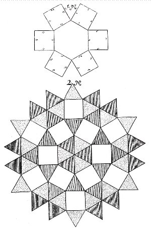
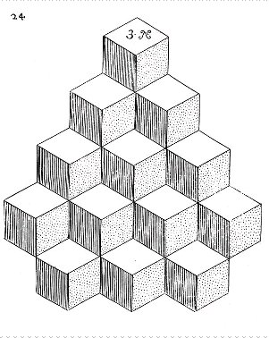
FIGURE VIII
(figure 1 - 2 - 3 - tétraèdres et polyèdres)Tiercement : que les vingt et quatre lignes de ces trois mots étant jointes d’une telle manière, que dix huit d’icelles soient élevées perpendiculairement, et six de travers, entre la deuxième et la troisième ligne, en figure de croix, prenant la longueur de chaque ligne de la mesure d’un pied, cette croix sera peut être de la même grandeur de celle de Jésus Christ ; et lorsque vous appliquez les lignes courbées des dits mots, les bouts d’icelles tenant ensemble, à la dite croix, vous verrez la figure d’un Serpent pendu à la croix, comme Moïse avait ordonné au Juif, dont vous pourrez voir ici la Figure a.
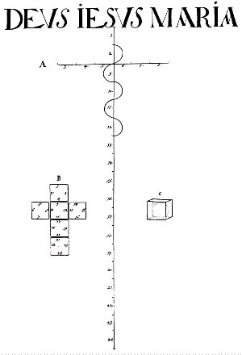
FIGURE IX
(figure a - b - le mot Jesus dérivé du mot deus - cliquez pour agrandir)En Quatrième lieu : que les six carrés susdits étants mis d’une façon qu’un d’iceux soit au milieu de quatre autres, et que le sixième soit appliqué dessous le cinquième, comme il est à voir à la Figure b, vous trouverez alors une façon d’une croix composée de six carrés réguliers, dont les six Plans, étant pliés ensemble forment la superficie du corps stétéométrique régulier du Cube, dedans lequel les deux ss du mot jesus étants enfermés, en sorte que les deux bouts soient joints ensemble en cercle, l’enterrement de notre seigneur Jésus Christ pourrait être observé.
Car, comme les Philosophes nous assurent, que l’Or, (qui a naturellement la signature sphérique) lorsqu’il est joint à son sel (auquel la nature a donné la signature cubique) et qu’il a été son temps limité enterré dedans le feu infernal des Philosophes, qu’il en sortira glorieusement, et qu’il sera alors une médecine très glorieuse pour ses frères qui sont es royaume végétable, Animal et Minéral Ainsi notre sauveur Jésus Christ a transformé et glorifié son corps composé des Eléments par la descension de son St. Esprit aux enfers, et par le retour d’icelui à son corps, qu’il a pu rendre son corps incorporel selon son bon plaisir divin ; en telle sorte, qu’il a pu transformer et qu’il a pu transmuer de même, par son St. Esprit, tous ceux qu’il lui plaît, d’une manière, que cependant leurs vies, et après leur mort, ils ont pu faire des grands miracles, comme il a paru aux Apôtres, dont les ossements, après leurs morts, ont même pu ressusciter des corps morts, comme le nouveau Testament nous en donne quantités d’exemples, et d’histoire. Vous pourrez regarder les figure ci-dessous qui vous confirmeront ce que nous venons de dire, dont la dernière cubique est celle marquée de la lettre c.
Voilà ce que j’avais à vous dire des nombres, lignes et caractères lesquels me sont tombés dans l’esprit lorsque j’avais arrêté un peu ma méditation à l’histoire de notre Seigneur Jésus-Christ en regardant les lettres des trois mots deus jesus et maria. Je vous supplie, mon très cher, d’excuser la simplicité de mon style et la chétiveté de mon propos, puisque mon discours n’a été jusqu’à présent que des nombres, des lignes et des lettres, j’attends quelque chose de plus beau de votre faveur.
Notes1. Voilà bien toute la philosophie de l'alchimie. Le véritable Artiste est celui qui n'espère qu'une chose : accroître ses connaissances en les faisant partager aux autres. Nous n'avons pas d'autre but dans ce site.
2. Les croyants pensent que la survie est possible au-delà de la mort physique et de la misère humaine. Les athées ont un autre point de vue : ils considèrent que la survie passe par la transmission du savoir [ce qui, bien sûr, ne veut pas signifier que les croyants ne le considèrent pas aussi]. A la différence des croyants, les athées considèrent que leur existence est un présent instantané perdu entre une éternité en amont et une éternité en aval de leur singularité ; et que cette éternité porte le nom de néant. Car seule la conscience permet de concevoir l'espace et le temps.
3. sur Hermès Trismégiste, cf. la Table d'Emeraude. Rappelons que les écrits hermétiques datent du IIIe siècle ap. J.-C. Voyez là-dessus la Révélation d'Hermès Trismégiste, de A.-J. Festugière O.P. [Les Belles Lettres, Paris, 1990, 3 vol.] et Giordano Bruno et la Tradition hermétique, de Frances A. Yates [Dervy, 1988, 1996]. Sur saint Thmoas d'Aquin, cf. prima materia et le Composé des Composés, attribué à Albert le Grand. Sur Geber, cf. Chevreul, Résumé de l'Histoire de la Matière et critique de Hoefer, I.
4. Le premier être est l'EN TO PAN de la Chrysopée de Cléopâtre. Il s'agit du Mixte fait de Mercure et de Rebis. Ce premier être peut être aussi vu comme la quintessence. Les deux contraires sont les extrémités du vaisseau de nature, c'est-à-dire les deux Soufres. Sur les quatre éléments, voyez Chevreul. Les trois principes sont évidemment le Mercure, le Sel et le Soufre. Sur le Sel, on peut consulter la section chimie et alchimie.
5. Van Helpen reste dans la grande tradition hermétique ; on verra le plan qu'adopte John Dee dans sa Monade Hiéroglyphique. Helpen sépare toute ligne courbe, d'essence mercurielle, de toute ligne droite, caractérisant le Soufre ou, si l'on préfère, le FEU [cf. Atalanta, XXXIX]. Fulcanelli ne disait rien d'autre dans ses Demeures Philosophales.
6. Lorsque les alchimistes emploient le mot méditation, il est toujours question du Mercure. Notez que le mot mediatione a été mal traduit dans la Table d'Emeraude. L'Hortulain y a vu le mot meditatione, ce qui n'a pas été pour peu dans le Commentaire pour le moins singulier qu'il a donné de la Tabula Smaragdina.
7. Voir là-dessus deux traités attribués à Basile Valentin, qui sont d'ailleurs congénaires : Le Traité des Choses Naturelles et Supernaturelles, complété de la Révélation de la Teinture des Sept Métaux et un autre traité attribué à Bernard de Trévise, la Philosophie Naturelle des Métaux. On complètera par l'étude de la Philosophie Naturelle Restituée du Président Jean d'Espagnet.
8. par cabale iwodhV, c'est-à-dire violet [ion + wdhV] et semblable à la rouille, vénéneux ou venimeux, ce qui introduit le mythe du serpent Ouroboros [ioV + wdhV]. Quant à wdh, il s'agit du chant, ce qui explique pourquoi tant d'alchimistes disent que leur Art est comparable à celui de la musique. Dans notre cas, il pourrait s'agir du chant de deuil [dissolution], d'un chant de guerre [réincrudation ; Pallas-Athéna, cf. porte alchimique de Metz] ou du chant du coq [allégorie du coq et du renard, parabole voilant la fixation du Soufre].
9. Le cercle est l'exacte figuration du Mercure, ou plutôt de l'eau mercurielle, appelée aussi eau permanente.
10. Les significations de ces voyelles sont les suivantes :
A : le Soufre sublimé sous forme de FEU
E : le Soufre enté
I : Soufre
O : Mercure
V [U] : l'EAU
Il manque la lettre Y, où 'on peut voir le Rebis, cf. Atalanta, XLII.
11. Dans ses Trois livres de la philosophie occulte, Corneille Agrippa [Agrippa de Nettesheim, 1486-1535] expose la cabale-verbe, les merveilleuses opérations réalisées avec des anagrammes hébraïques, des carrés magiques et les noms des anges, que l'on découvre par le calcul. Dans son second livre, il parle de la vertu magique immanente aux nombres. Le chapitre I porte ce titre suggestif : De la nécessité de l'enseignement mathématique et de snombreuses opérations magiques que l'on ne fait que par les mathématiques. Agrippa mit l'accent sur la pratique de la cabale qu'il considérait comme une partie jusqu'alors négligée de la magie naturelle. Sur Cornélius Agrippa :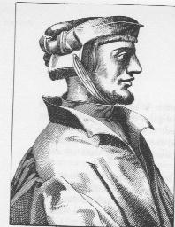
Cornelius AgrippaDans le tourbillon de la Renaissance, Henri-Corneille Agrippa de Nettesheim, qui est12. En fait, Dieu, en grec, s'écrit qeioV. Par cabale, on peut rapprocher le vocable de qeion, qui signifie soufre. On pourrait même aller plus loin, s'il n'y avait des bornes à tout, et séparer la syllabe ioV [venin, rouille] de Dieu et la syllabe ion [violette] du soufre.
peut-être la plus forte personnalité parmi les occultistes du temps, connut toutes les fortunes : il passa de pays en pays, de la plus haute faveur au cul de basse-fosse, de l'étude silencieuse au champ de bataille, de la richesse à la pauvreté. Homme d'érudition, il correspondit avec les grands humanistes de son temps, tels que Mélanchton, Érasme et le cardinal Campeggi. Agrippa fut encouragé par l'abbé Trithème à faire imprimer ses théories magiques, dont l'essence est empruntée au néo-platonisme. L'époque était propice à l'entreprise: les idées néo-platoniciennes hantaient les meilleurs esprits, et les humanistes se plaisaient à en opposer les merveilles à la pensée précise et méthodique d'Aristote. L'étude de Plotin, de Jamblique et de Porphyre plongea Agrippa dans le surnaturel et l'occulte, et son enthousiasme pour ces philosophes du merveilleux l'emporta sur son sens critique. L'esprit ouvert à tous les courants occultes, il s'efforça, comme Pic de La Mirandole, de concilier diverses doctrines et d'unir la philosophie classique et la cabale. En ses dernières années pourtant, Agrippa, probablement sous l'influence de la contre-Réforme, désavoua ses écrits magiques. Désormais aussi incrédule qu'il avait été crédule auparavant, il professa que rien n'était certain dans les arts ni les sciences, et que la seule chose au monde qui fût solide était la foi religieuse. Pour interpréter cette étonnante évolution de l'extrême crédulité au scepticisme intégral, il faut suivre le mage à travers les différents épisodes de sa vie. Encore jeune homme, il se rendit à Paris chargé par l'empereur Maximilien d'une périlleuse mission. Il y rencontra de jeunes érudits, des nobles avec lesquels il fonda une société secrète. Ils mirent sur pied un plan mystique pour réformer le monde, et se promirent assistance mutuelle. C'est ainsi que l'un d'entre eux, un jeune seigneur de Gerona en Catalogne, apprenant que les paysans de son domaine avaient dépossédé sa famille et pris le pouvoir, partit pour mater cette jacquerie, sous la conduite d'Agrippa, avec un détachement d'hommes de troupe. Pourtant, leurs efforts pour réinstaller le seigneur de Gerona dans ses droits échouèrent et le groupe se dispersa.
En 1509, Agrippa arrivait à Dole, alors capitale de Bourgogne dont la régente était
Marguerite d'Autriche, fille de Maximilien. Grâce à un ami, Agrippa obtint la permission
de professer à l'Université où il commenta le traité cabalistique de Reuchlin, La parole
mirifique. Souhaitant gagner la faveur de Marguerite d'Autriche, il composa La noblesse
du sexe féminin et La supériorité des femmes. Avec des arguments empruntés à la Bible, aux Pères de l'Église et à la philosophie, il fait l'éloge du beau sexe en termes exaltés. L'oeuvre est dédiée à la « divine Marguerite, auguste et très clémente princesse ». La faveur de Marguerite fut lente à venir, et Agrippa ne tarda pas à se faire des ennemis, surtout des clercs qui flairaient dans sa sympathie pour la cabale une dangereuse hérésie. A Gand, aux Pays-Bas, où résidait Marguerite, un franciscain, Catilinet, prêcha devant elle contre ce cabaliste impie, et Agrippa fut empêché par ses adversaires de publier son éloge des femmes. Il abandonna sa cause et se rendit en Angleterre, puis à Cologne où il fit des cours publics. Sa maladresse en matière de
finances devint notoire, et diverses bévues éloignèrent de lui admirateurs et mécènes.
En 1515, il suivit en Italie l'armée de Maximilien et fut fait chevalier sur le champ de
bataille. Le cardinal de Sainte-Croix l'envoya à Pisé comme représentant au consistoire.
C'était sa dernière chance de se mettre en règle avec l'Église et de plaire au pape Léon X, dont il avait reçu une lettre amicale. Mais le consistoire fut interrompu et les assemblées se débandèrent. Abandonnant sa carrière militaire et ecclésiastique, Agrippa enseigna à Turin et à Pavie ; il y fit notamment des cours sur Hermès Trismégiste qui lui firent gagner moins d'argent que de renommée. En 1518, les seigneurs de Metz le choisirent comme avocat, syndic et orateur de la cité. Trois ans plus tard, il quitta son poste après sa querelle avec l'inquisiteur Savini, des mains duquel, nous l'avons vu, il avait sauvé une paysanne injustement accusée de sorcellerie. Il enseigna ensuite à Cologne, ainsi qu'à Genève et à Fribourg où il pratiqua la médecine. Finalement, en 1524, il reçut une pension de François Ier, avec la charge de médecin de Louise de Savoie, mère du monarque. Elle voulut qu'Agrippa lui prédît l'avenir par l'astrologie, mais il répondit qu'il ne ferait usage de ses talents que pour un sujet de plus grande importance. Quand la duchesse quitta Lyon, Agrippa ne la suivit pas, et son nom
fut rayé de la liste des pensions. En 1529, la fortune, dans son inconstance, parut de nouveau lui sourire. Il fut appelé par quatre mécènes différents : Henri VIII d'Angleterre ; le chancelier de l'empereur d'Allemagne ; un marquis italien et Marguerite d'Autriche, régente des Pays-Bas. Vingt ans après la composition de La supériorité des femmes, Marguerite semblait finalement s'être laissé gagner, et Agrippa fut nommé historiographe impérial. Ce fut à ce moment qu'il publia son fameux ouvrage De la vanité des arts et des sciences, dans lequel il déclarait que toute pensée et toute activité humaines n'étaient que vanité. Une fois de plus, ses ennemis furent exaspérés. Le légat du pape, cardinal Campeggi, et le cardinal de la Marck, essayèrent en vain de le défendre. Sa pension d'historiographe supprimée, comme il était incapable de payer ses dettes, on le mit en prison à Bruxelles. Il fut relâché au bout d'un an. C'est alors que parut enfin sa Philosophie occulte, œuvre de jeunesse qui n'avait pas encore été publiée. Cet ouvrage suscita une incroyable confusion, du fait de sa publication tardive, parce qu'il se trouvait déjà réfuté par la Vanité des arts et des sciences. La Philosophie
occulte affirmait avec optimisme que les hommes étaient capables de faire des miracles par le pouvoir de leur sagesse. Une fois de plus, Agrippa décida de quitter l'Allemagne et finit par trouver refuge à Grenoble, dans la maison d'un nommé Allard, receveur général de Provence. C'est là qu'il mourut, en 1535.
La Philosophie occulte, qui eut une si grande influence sur l'occultisme occidental, mérite bien un bref résumé. La magie, dit Agrippa, est une faculté puissante, pleine de mystères et voilant une profonde connaissance des choses les plus secrètes, de leur nature, de leur pouvoir, de leurs qualités, de leur substance et de leurs effets, ainsi que de leurs relations et antagonismes. C'est une science philosophique : c'est la physique, la mathématique et la théologie. Par la physique, nous apprenons la nature des choses ; par la mathématique, nous comprenons leurs dimensions et calculons le mouvement des corps célestes ; par la théologie, nous arrivons à connaître Dieu, les anges et les démons, l'intelligence, l'âme et la pensée. La physique est terrestre ; la mathématique, céleste ; la théologie rend compte du monde archétype. Le mage, dans son étude de la nature, augmentera par degrés sa sagesse : par l'étude des pierres, il apprendra l'essence des étoiles ; par celle des planètes, la connaissance sera amenée au sublime. Agrippa part des quatre éléments: le feu, l'eau, la terre et l'air. Ces éléments se
présentent en trois types : ici-bas, ils sont mélangés, impurs ; dans les étoiles, ils sont purs ; en troisième lieu, ce sont des éléments composites qui peuvent changer et qui sont le véhicule de toutes les transformations. Il reprend l'affirmation néo-platonicienne selon laquelle on trouve les éléments ici-bas, dans tout l'univers, dans les esprits et les anges, et même en Dieu. C'est à partir des éléments que sont nées les vertus naturelles des choses, mais non point leurs vertus occultes. Celles-ci sont introduites dans les choses par les idées, par l'intermédiaire de l'âme du monde. Afin de dévoiler les vertus occultes, nous devrions explorer le monde au moyen des ressemblances. Par exemple, le feu d'ici-bas excite le feu céleste, l'œil guérit l'œil, la stérilité produit la stérilité. C'est pourquoi le feu sacrificiel réagit sur le feu divin ou la lumière ; les yeux de grenouille soignent la cécité de l'homme ; l'urine de mule rend les femmes stériles. De même qu'il y a accord entre les choses voisines, il y a discorde entre les contraires. L'expérience a montré par exemple qu'il y avait accord entre le tournesol et le soleil ; tandis qu'entre le lion et le coq il y a hostilité, tout comme entre l'éléphant et la souris. Au mage de reconnaître ces sympathies et antipathies, afin d'opérer sur la nature. Des relations de ce genre se trouvent également entre les planètes, amicales ou hostiles l'une à l'autre. De tels rapports peuvent servir à des fins magiques, car tout ce qui est inférieur est soumis à ce qui est supérieur. Non seulement les étoiles influencent de simples objets, mais aussi des provinces, des pays, des royaumes entiers, auxquels ont été affectés des signes planétaires et zodiacaux. En traçant ces lignes célestes, le mage rend propices les puissances d'en haut. Le symbole du Sagittaire attire les vertus de cette constellation, et en attachant un tel talisman au cou d'un cheval on est garanti de la bonne santé de l'animal, parce que le cheval et le Sagittaire ont des liens de parenté. Ainsi, par divers artifices bien préparés et coordonnés, on capte l'influence favorable des étoiles, des démons du bien et même de Dieu. Agrippa énumère ces merveilleux artifices. Il y a le feu et la fumée, les pommades, les plantes, les animaux, les métaux, les gestes et les paroles. Expliquant en détail l'essence de la divination et des augures, il établit que des prédictions aussi mystérieuses sont le fruit de la connaissancc des sympathies et antipathies. Connaissant les relations entre les choses de la terre et leurs maîtres supérieurs, l'inspiré découvrira des signes d'événements à venir qui demeurent cachés au profane. Les sciences mathématiques sont indispensables au mage, du fait que les vertus naturelles sont gouvernées par les nombres, les poids et les mesures. D'ailleurs la lumière, le mouvement, et même l'harmonie du monde, tirent leur origine des mathématiques. Pour connaître les plans de l'univers, il faut comprendre les proportions selon lesquelles le Grand Architecte les a établis. Les nombres recèlent des vertus aux effets merveilleux dans les deux mondes (ici-bas et en haut). Ainsi le nombre un, base de tous les nombres, exprime aussi le Dieu unique, principe de toute la création. Selon les pythagoriciens, dit Agrippa, il y a des nombres sacrés en rapport avec les éléments et les dieux planétaires. Ces nombres devraient être utilisés dans les diagrammes magiques. La connaissance des mathématiques est nécessaire pour l'harmonie musicale, reflet de l'harmonie universelle.
Dans le troisième livre, Agrippa souligne la part de la religion dans toute opération
magique. « La religion, dit-il, est la chose la plus mystérieuse, sur laquelle on devrait garder le silence, car Trismégiste dit que ce serait une offense à la religion que de la confier à la multitude profane. » La religion est l'accomplissement et la clé de la magie, une discipline menant à la dignification de l'homme. Cette conception d'Agrippa est loin d'être orthodoxe. Sa religion est plutôt un mélange de christianisme, de néo-platonisme et de cabale. Il parle des esprits planétaires, des démons, bons et mauvais, des conjurations et pentacles sacrés, des dix noms sacrés de Dieu, auxquels il attribue des pouvoirs magiques. Il connaît le langage des anges et leurs noms, aussi bien que ceux des esprits, des étoiles, des éléments et des quatre coins du monde. Il expose le secret des hiéroglyphes cabalistiques sacrés, et tout ceci pour instruire le mage de la manière de conjurer le surnaturel, car, selon ses termes, « quoique l'homme ne soit pas un animal immortel comme l'univers, il est néanmoins raisonnable, et avec son intelligence, son imagination et son âme, il peut agir pour transformer le monde entier ».Le Miroir de la Magie, Kurt Seligmann, Fasquelle, 1956, Paris
13. Ce n'est pas autrement qu'a procédé Michel Maier, dans l'emblème XXI de son Atalanta fugiens.
14. sur la Vierge, voyez l'Atalanta, XLVII.